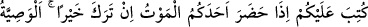

Akl-ı selîm sahipleri, şiddetli riyâzatla nefislerini öldürmeli, güzel ve sonsuz bir
hayat ile kalblerini diriltmelidir. Ey Allah’ım, hasta kalblerimize devâ bulmaya bizleri
muvaffak kıl! Amin.
180. Birinize ölüm geldiği zaman, eğer bir hayır bırakacaksa anaya, babaya,
yakınlara uygun bir biçimde vasiyet etmek Allah’dan korkanlar üzerine bir borçtur.
Ölümün gelmesinden maksad, onun hastalık, illet ve benzeri işâret ve sebeblerinin
ortaya çıkmasıdır. Çünkü tam ölüm ânında kişi vasiyete güç yetiremez.
Âyette geçen “hayr”dan maksad az veya çok ya da sadece çok mal demektir. Meselâ
“falan kişi mal sahibidir” sözü malı az olana ıtlak edilmez. Bu sebeble vasiyet etmek
için, ölmekte olan kimsenin arkada bırakacağı belli bir miktar malı olması gerekir. Bu
konuda, Hz. Âişe (r.anhâ) validemizden şöyle bir rivâyet vardır: Adamın birisi Hz.
Âişe (r.anhâ)’ya gelerek vasiyyette bulunmak istediğini söyleyince o, adamın ne kadar
malı olduğunu sordu. Adam: “Üç bin” diye cevap verdi. Bu kez Hz. Âişe: “Bakmakta
olduğun kaç kişi var?” diye sordu. Adam: “Dört” diye cevap verdi. Bunun üzerine Hz.
Âişe (r.anhâ): “Allah Teâlâ ancak, arkada belli bir miktar mal bırakanlara vasiyeti farz
kılmıştır. Seninki ise gayet azdır. Onu sen âilene bırak. Çünkü hayrın, şerrin zıddı
olması hasebiyle, en çok fayda doğuracak yere yapılması gerekir” dedi.
İhvân-ı Safâ risâlelerinde de şöyle bir ifâde vardır: “Hayır, gerekli bir sebeple
gereken bir vakitte gerekli işi yapmaktır.”
Ölümü yaklaşan bir kimse, eğer arkaya belli bir miktar mal bırakıyorsa, bu maldan
kendisine vâris olabilecek ana babasına ve kendisine vâris olamayacak yakınlarına
vasiyet etmesi farzdır. Yalnız bunun uygun bir şekilde olması gerekir. Yâni vasiyet
edenin, malının üçte birinden fazlasını vasiyet etmemesi ve malını, fakiri bırakıp da
zengine vermemesi lâzımdır.
Bu âyetin iniş sebebi şudur:
Cahiliye döneminde insanlar, gösteriş yapmak, övülmek ve şeref sahibi olarak
bilinmek için uzak kimselere mallarını vasiyet ederek fakir olan yakın akrabalarını
ihmâl ederlerdi. Bundan dolayı Allah Teâlâ bu âyeti indirerek, akrabalığı olmayan uzak
insanlara yapılan yardımı anne babaya ve yakın akrabaya çevirmiş oldu. Hikmet ve
maslahatın gerektirdiği kadar bu âyetle amel edildikten sonra Nisâ sûresindeki miras
âyetleriyle bu âyet nesholundu. Şu anda hiçbir kimsenin, uzak veya yakın hiçbir kimseye
vasiyyette bulunması farz değildir. Fakat isteyen, kendine vâris olabilecekler dışında,
yakın veya uzak diğer kimselere vasiyyette bulunabilir. Vasiyet, malını zâyi etmekten ve
yakınlarını mahrûm bırakmak istemeyen kimseler üzerine bir borçtur. Yâni eğer siz